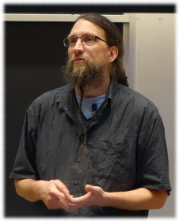

Reproducible builds
At his LibrePlanet 2017 talk, Vagrant Cascadian gave an overview of the reproducible builds project, which seeks to make it so that all software projects can be reliably built in such a way that users can ensure that the source code provided is the same as what was used to build a binary. His talk was partly aimed at getting attendees ready for a two-slot hands-on workshop on how to actually turn a software project into one that can be reproducibly built. LibrePlanet was held March 25-26 in Cambridge, Massachusetts at the Stata Center on the campus of MIT.

Cascadian has been involved in free software for a long time. He remembers getting a whole bunch of Linux distribution CDs in the mail and finding one in particular, Debian, that stood out, in part because of its social contract. But he soon realized that even though the source code is available, there is no way to be sure that the binaries that get installed actually come from that source. Obviously, if there was no connection between the two, it would be noticeable, so the kinds of changes that could slip through are the "small, insidious changes".
In addition, reproducibility is a key component of the scientific method. If you are building software and it is not reproducible, "how is that science?" There are some simple checks that could be done using checksums or hashes of the output of a test suite, for example, but that only tests areas that we already know are problematic. The project wants to find things that we don't know about, so it is focused on creating binaries that are bit-for-bit identical.
Software is built from more than just the source code, and the binary that results is affected by various other things: the build instructions, toolchain (compiler, linker, libraries, and so on), and the environment (time of build, running kernel version string, and others). The environment is what generally makes reproducible builds difficult; by and large those pieces aren't really needed. If that gets removed, and the same versions of the toolchain pieces are used, it should result in identical binaries that can then be verified by anyone.
Cascadian noted that the famous "Reflections on Trusting Trust [PDF]" lecture by Ken Thompson in 1984 and pointed out that little has been done to fix the problem in the intervening years. David A. Wheeler's Diverse Double-Compiling technique could be used to combat attacks of the nature that Thompson described. However, in order to use the double-compiling technique, reproducible builds are needed.
Reproducibility is important for other reasons too, Cascadian said. He pointed to an off-by-one error in OpenSSH (CVE-2002-0083) that led to privilege escalation. It could be fixed using a hex editor—or it could be reintroduced that way. In addition, we had never seen a "trusting trust" attack until 2015, when the XcodeGhost malware used a compiler backdoor to add malicious code to some 4000 apps in Apple's AppStore.
Furthermore, if you are not running the software you think you are, it undermines all of the promises that free software brings. You can still run the code, "I guess", but studying the code is severely hampered if other code is included behind the scenes. You can try to fix the code, but it is moot if other code can be injected. And you certainly don't want to share the code if you don't know what's actually in it. So it undermines the four freedoms.
Reproducible builds have been mentioned on the Debian mailing lists since back in 2007. In late 2014, Debian started automatically rebuilding the 25,000 source packages in its archive. Currently, it is building 1600-2200 packages per day for each of four different architectures (amd64, i386, arm64, and armhf). The reproducible builds project has gotten to the point where all but 5% of the software in Debian testing, which amounts to 1300 packages, can be built reproducibly.
The biggest problem area for making a package that can build reproducibly is timestamps embedded in the binary. That is how he got involved in the project. He is a maintainer of the U-Boot boot loader project and noticed that it was listed as a reproducible build, but knew that was impossible due to the inclusion of build timestamps in the binary. The best way forward is for projects to remove the timestamps entirely and use a commit ID or commit timestamp. But for those projects that really need the build timestamp, adding support for the SOURCE_DATE_EPOCH environment variable will allow building reproducibly.
There are other common problems that make bit-for-bit identical binaries difficult. That includes things like time zones, file sort order, build paths, and locales. At this point, the project is working on the "last mile" problems; work is progressing on handling build path differences, for example.
He noted that he had mostly talked about Debian, but there are a "huge number of other projects" that are also working on the problem. Several Linux distributions (Fedora, openSUSE, Tails, Arch) are part of the effort, as are applications such as Bitcoin and Tor Browser. NixOS and GNU Guix are particularly interesting because they already incorporate the idea of reproducibility to some extent.
Moving forward, he said, there is of course more work to do. Since Debian can reproducibly build 95% of its 25,000 packages, though, it is clearly edging out of the proof-of-concept stage. He would like to see a way for users to be able to only install reproducible packages and to be able to specify a threshold of other users who have built the code identically before a package will be installed. Eventually distributions with support for that will come out; Debian will be one of them, but not in the next release that is due soon. He would also like to see reproducible builds as a standard development practice in the free-software world.
He concluded by thanking several organizations that have supported the developers working on the project: the Core Infrastructure Initiative, ProfitBricks, and Codethink. He also thanked the developers and others who are working hard on reproducible builds. He reminded attendees of the upcoming workshop and suggested that they bring their favorite project along to work on making it reproducibly buildable.
[I would like to thank the Linux Foundation for travel assistance to
Cambridge, MA for LibrePlanet.]
| Index entries for this article | |
|---|---|
| Security | Deterministic builds |
| Conference | LibrePlanet/2017 |
Posted Apr 13, 2017 7:52 UTC (Thu)
by ms (subscriber, #41272)
[Link] (3 responses)
I'm curious as to the meaning of this statement - to me, nixos is pretty much the current pinnacle of reproducible builds and systems. I'm failing to see where the "to some extent" bit comes in.
Posted Apr 14, 2017 3:36 UTC (Fri)
by eternaleye (guest, #67051)
[Link]
Posted Apr 18, 2017 14:48 UTC (Tue)
by infinity0 (guest, #113387)
[Link] (1 responses)
By contrast, at the Reproducible Builds project we're making those packages reproducible *without* restricting parts of the build environment. In fact, we're specifically varying as much of the build environment as possible! This is a stronger security property - not only are you *more confident* that the system time *truly* doesn't affect a build (when it reproduces), but also users don't have to run a particular OS or other thing, they get the reproducibility all the time.
Posted Apr 18, 2017 14:57 UTC (Tue)
by ms (subscriber, #41272)
[Link]
Reproducible builds
Reproducible builds
Reproducible builds
Reproducible builds